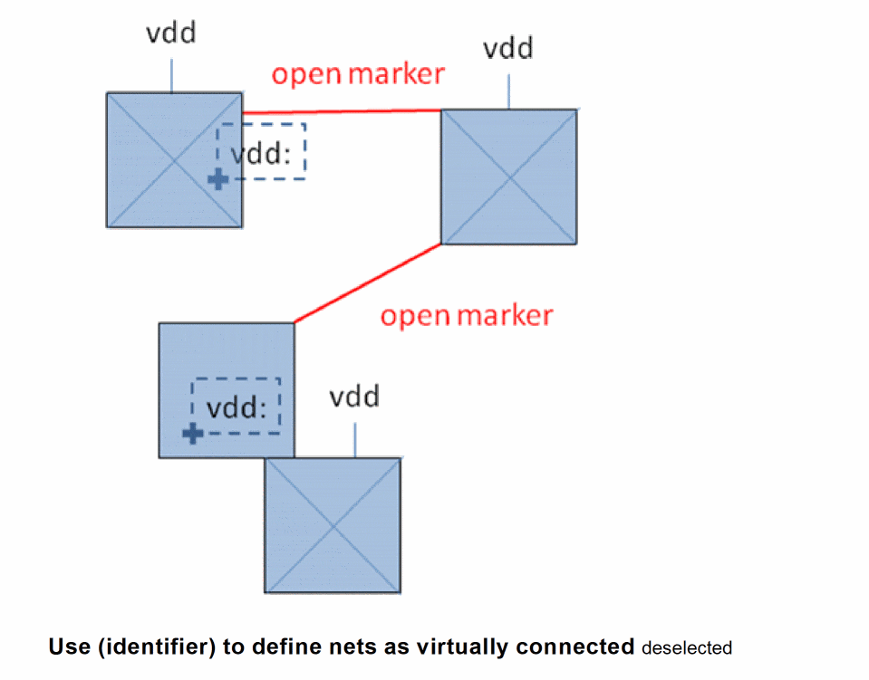
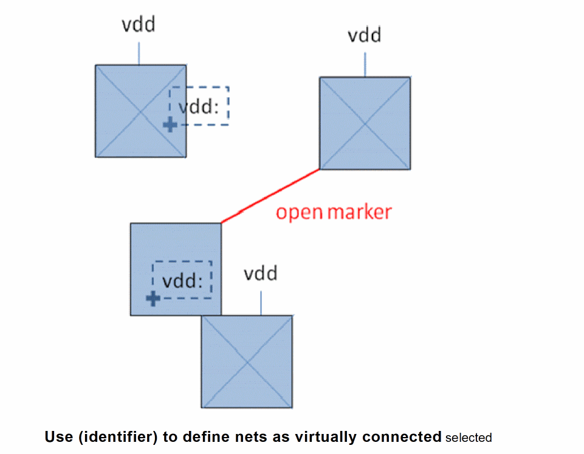
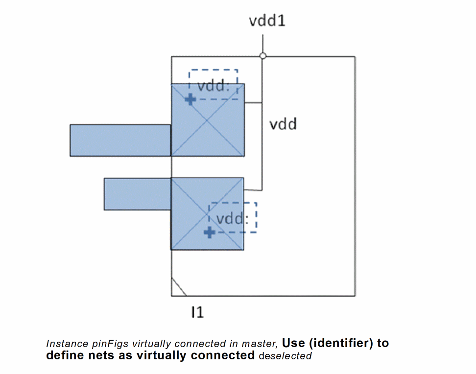
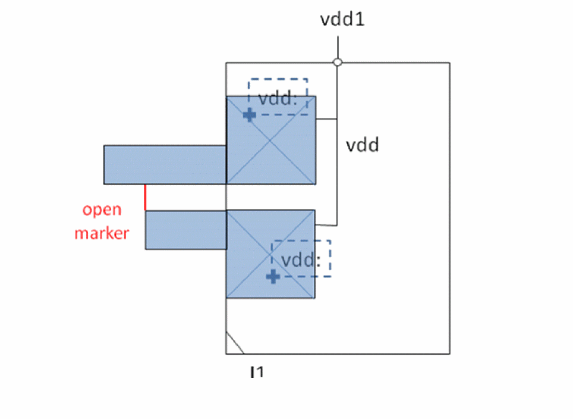
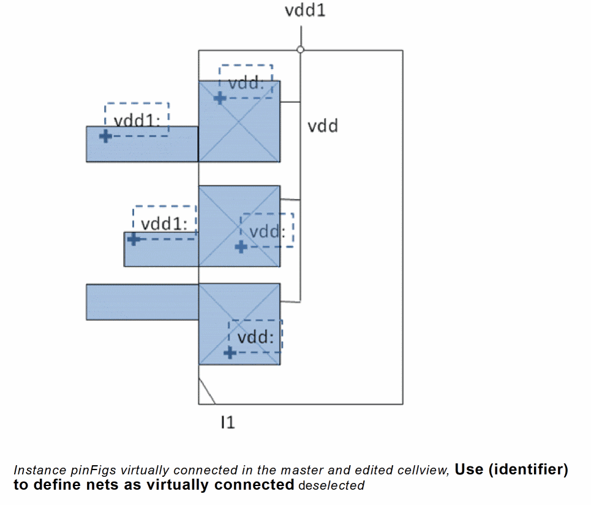
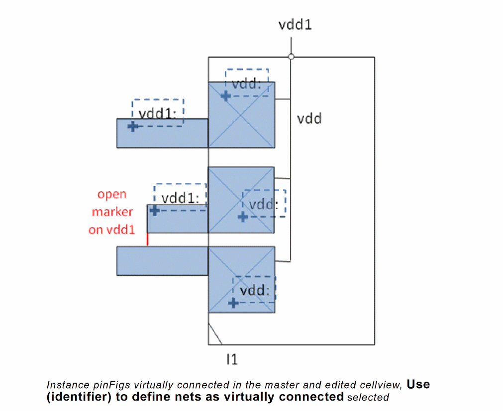

Enabling Virtual Connections
Virtual connections are logical electrical connections between sets of physically connected shapes.
Listed below are some key terms to be understood before learning about virtual connections and how these connections are processed by the Layout XL connectivity extractor.
-
Attached Label: Label (
oaText) attached to a shape in the edited cellview. For information about how the Layout XL connectivity extractor processes connectivity from attached labels, see Connectivity from Attached Labels to Consider During Extraction. -
Stamp Label: Label (
oaText) stamping a shape either in the edited cellview or in the hierarchy. For a label to stamp a shape, the origin of the label must overlap the shape. In addition, in the technology filestampLabelLayersrule, the stamp layer must be defined as stamping the shape layer-purpose pair. For information about how the Layout XL connectivity extractor processes connectivity from stamp labels, see Connectivity from stampLabels During Extraction. -
Virtual-connect label: Label (
oaText) that has the specific syntax to tag shapes as virtually connected. By default, for a label to be recognized as a virtual-connect label, the label must have the virtual-connect separator, (:), such asvdd:. A virtual-connect label can be attached or stamped to the shape.
See Connectivity from Attached Labels to Consider During Extraction and Connectivity from stampLabels During Extraction.
You can change the virtual-connect separator to a value other than colon (:). See Connectivity Form in the Connectivity form for more information.
Layout XL recognizes virtual connections. This implies physically disconnected shapes that are on the same net are recognized as connected, if the shapes have a label containing the net name followed by a colon (:), such as vdd:. During connectivity extraction, no open markers are created between virtually connected shapes, if the connectivity extractor is run with the Use (identifier) to define nets as virtually connected selected.
For more information about the Use (identifier) to define nets as virtually connected option, see Connectivity tab in the Connectivity form.
However, for the virtual-connect labels to be recognized by the connectivity extractor, the labels must exist in the edited cellview. The shapes that these virtual-connect labels tag can exist in the edited cellview or in the hierarchy.
Depending on the factors listed below, the connectivity extractor processes connectivity between shapes on the same net differently.
- Existence of virtual-connect labels on the extractable shapes
- Status of the Use (identifier) to define nets as virtually connected option
- Physical connection between the extractable shapes
Let us consider some scenarios.
-
Case 1 – Two virtually-connected sets of shapes,
Use (identifier) to define nets as virtually connected
is deselected
In the figure above, there are three sets of physically connected shapes on netvdd. Two of these sets are tagged with a virtual-connect label,vdd:. But, the Use (identifier) to define nets as virtually connected option in the Connectivity tab of the Connectivity form is disabled. Therefore, the connectivity extractor processes the virtual-connect labels as regular labels and creates two open markers, as displayed. -
Case 2 – Two virtually-connected sets of shapes,
Use (identifier) to define nets as virtually connected
is selected
In the figure above, since the Use (identifier) to define nets as virtually connected option is selected, the extractor recognizes the virtual-connect labels on two sets of physically connected shapes and considers the sets as virtually-connected. Therefore, only one open marker is created with the non-virtually connected set of shapes, as shown in the figure above. -
Case 3 – Two instance pinFigs virtually-connected in master,
Use (identifier) to define nets as virtually connected
is deselected
If Use (identifier) to define nets as virtually connected is deselected, the connectivity extractor ignores the virtual-connect labels on the pinFigs of an instance. Therefore, no open markers are created on instance pinFigs that are not physically connected, as shown in the figure below. -
Case 4 – Instance pinFigs virtually connected in the master and the design, Use (identifier) to define nets as virtually connected is selectedIf the pinFigs of an instance are virtually connected in the master and Use (identifier) to define nets as virtually connected is selected, the connectivity extractor considers the pinFigs as physically disconnected in the master even though they belong to the same terminal. Because the pinFigs are defined as virtually connected in the master, they must be connected higher up in the hierarchy to complete the connection. Else, an open marker is created between the two shapes in the edited cellview to indicate that the shapes must be connected.
-
Case 5 – Instance pinFigs virtually connected in the master and the edited cellview, Use (identifier) to define nets as virtually connected is deselected
When two sets of physically connected shapes are virtually connected in the master, they must be physically connected in the top-level design for the connection to be considered complete. Else, an open marker is created during the connectivity extraction.
But, when Use (identifier) to define nets as virtually connected is deselected, the connectivity extractor ignores virtual-connect labels.In this case, no open markers are reported for virtually connected instance pinFigs.
 -
Case 6 – Instance pinFigs virtually connected in the master and the edited cellview,
Use (identifier) to define nets as virtually connected
is selected
When Use (identifier) to define nets as virtually connected is selected, the instance pinFigs virtually connected in the master must either be physically connected or virtually connected in the edited cellview. Else, the connectivity extractor creates an open marker between the instance pinFigs, as shown in the figure below.

Related Topics
Return to top